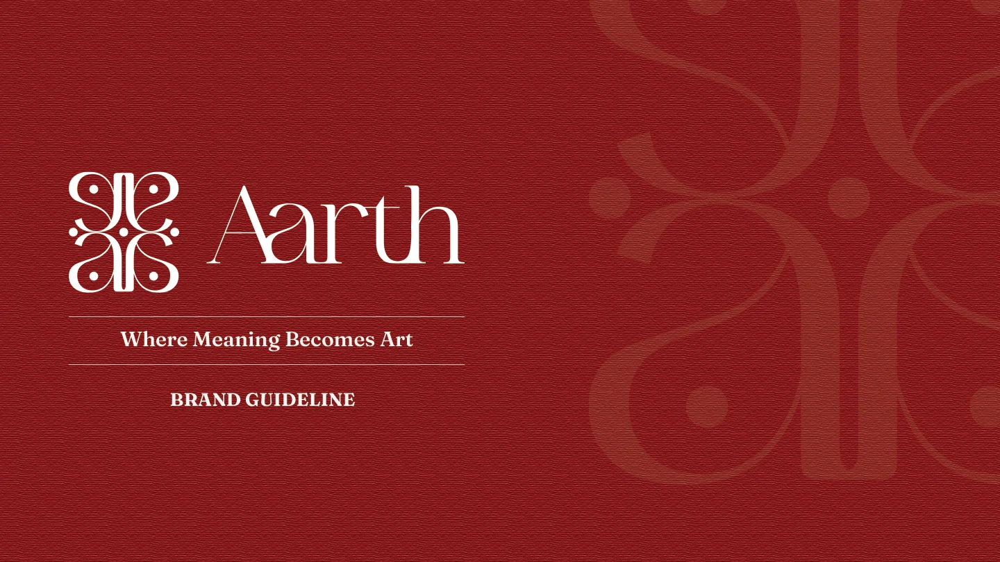
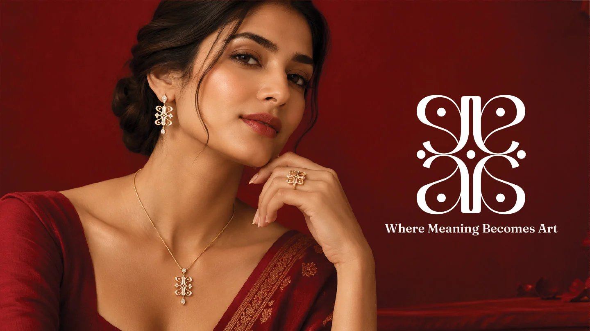
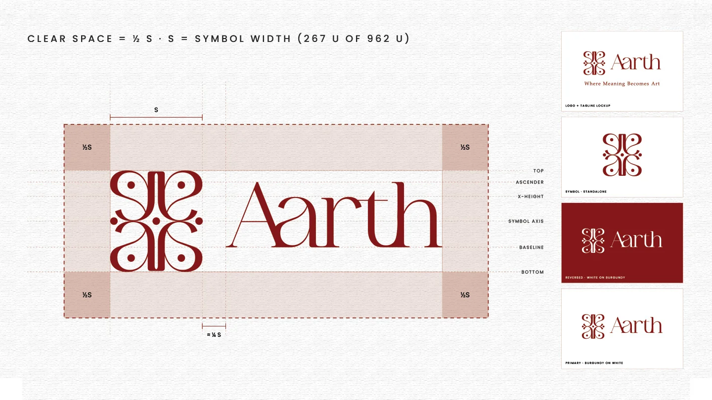

Work / 03 — Branding & Visual Identity · Personal & Experimental Projects
Aarth
Where Meaning Becomes Art. A self-initiated jewellery branding concept exploring the relationship between ornamental artistry, individuality and timeless elegance.
- Role
- Brand identity, packaging
- Scope
- Symbol, wordmark, pattern, packaging, digital touchpoints
- Typeface
- Aulane Demo

Concept
Flowing forms, balanced symmetry.
From the logo and colour palette to packaging and digital touchpoints, every element was designed to create a cohesive and distinctive brand experience.
Flowing forms · Balanced symmetry · Ornamental artistry · Individuality · Tradition · Timelessness
Symbol


Colour
- Maroon#850000
- White#FFFFFF

Packaging

Applications


Guidelines
